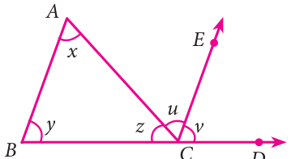
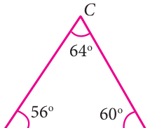
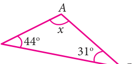
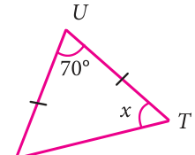
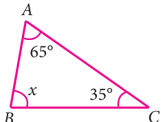
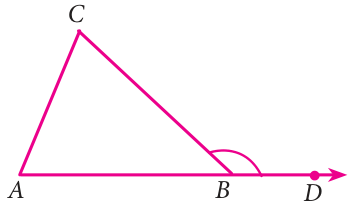

We are familiar with the angle sum property of a triangle which can be stated as the sum of all angles in a triangle is \(180 ^{\circ}\) . We can verify this by doing the following activity.
Activity
Draw any triangle and colour the angles. Check the property as shown below:
Take three equiangular tirangles Arranging the three triangles
From the above we have verified that the sum of three angles of any triangle is \(180 ^{\circ}\)
From the above activity, we get the result as, the sum of three angles of any triangle is \(180 ^{\circ}\) .
Now we prove the result in a formal method. Given: A triangle ABC, where \(\angle A = x\) , \(\angle B = y\) and \(\angle C = z\) .
Now let us prove, \(x + y + z =180\) . To show this we need to extend BC to D and draw a line CE, parallel to AB. Now CE makes two angles, \(\angle ACE\) and \(\angle ECD\) . Let it be u and v respectively. Now z, u, v are the angles formed at a point on a straight line.

Therefore \(z + u + v =180\) . ... (1)
Since AB and CE are parallel and DB is a transversal, Fig. \(4.4 v = y\) (corresponding angles).
Again AB and CE are parallel lines and AC is a transversal,
\(u = x\) (alternate angles). Also \(z + u + v =180\) [by (1)]
Hence, by replacing u as x and v as y, we get \(x + y + z =180\) .
Hence the sum of all three angles in a triangle is 180 .
Example 4.1 Can the following angles form a triangle?
- (i)\(80 ^{\circ}\) , \(70 ^{\circ}\) , \(50 ^{\circ}\) (ii) \(56 ^{\circ}\) , \(64 ^{\circ}\) , \(60 ^{\circ}\)
Solution
- (i)Given angles \(80 ^{\circ}\) , \(70 ^{\circ}\) , \(50 ^{\circ}\)
Sum of the angles \(= 80 ^{\circ} +70 ^{\circ} + 50 ^{\circ} = 200 ^{\circ} \ne 180 ^{\circ}\) The given angles cannot form a triangle.

- (ii)Given angles \(56 ^{\circ}\) , \(64 ^{\circ}\) , \(60 ^{\circ}\)
Sum of the angles \(= 56 ^{\circ} + 64 ^{\circ} + 60 ^{\circ} = 180 ^{\circ}\) The given angles can form a triangle.

Solution
Let ÐA \(= x\) Fig. 4.6 We know that, ÐA + ÐB + ÐC \(= 180 ^{\circ}\) (angle sum property)
\(x + 44 ^{\circ} + 31 ^{\circ} = 180 ^{\circ}\)
\(x + 75 ^{\circ} = 180 ^{\circ}\)
\(x = 180 ^{\circ} - 75 ^{\circ} x = 105 ^{\circ}\)
Example 4.3 In ΔSTU, if \(SU = UT\), ÐSUT \(= 70 ^{\circ}\) , ÐSTU \(= x\), find the value of x.
Solution
Given, ÐSUT \(= 70 ^{\circ}\)
ÐUST = ÐSTU \(= x\) [Angles opposite to equal sides] ÐSUT + ÐUST +ÐSTU \(= 180 ^{\circ}\)

\(70 ^{\circ} + x + x = 180 ^{\circ} 70 ^{\circ} + 2x = 180 ^{\circ}\)
\(2x = 180 ^{\circ} - 70 ^{\circ} 2x = 110 ^{\circ} x = \frac{110 ^{\circ} }{2} = 55 ^{\circ}\)
Example 4.4 If two angles of a triangle having measures \(65 ^{\circ}\) and \(35 ^{\circ}\) , find the measure of the third angle.
Solution
Given angles are \(65 ^{\circ}\) and \(35 ^{\circ}\) . Let the third angle be x

\(65 ^{\circ} + 35 ^{\circ} + x = 180 ^{\circ} 100 ^{\circ} + x = 180 ^{\circ} x = 180 ^{\circ} - 100 ^{\circ}\) Fig. \(4.8 x = 80 ^{\circ}\)
